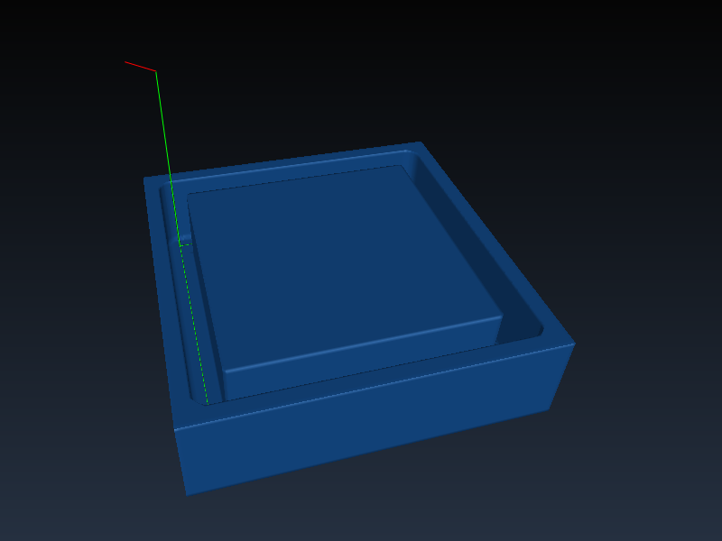
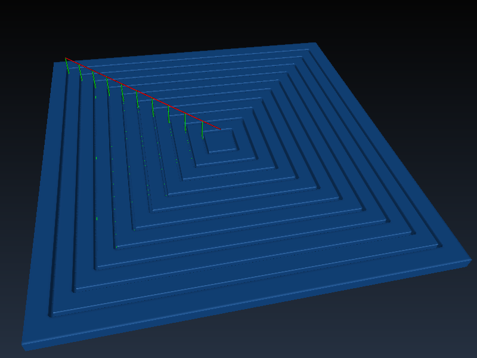
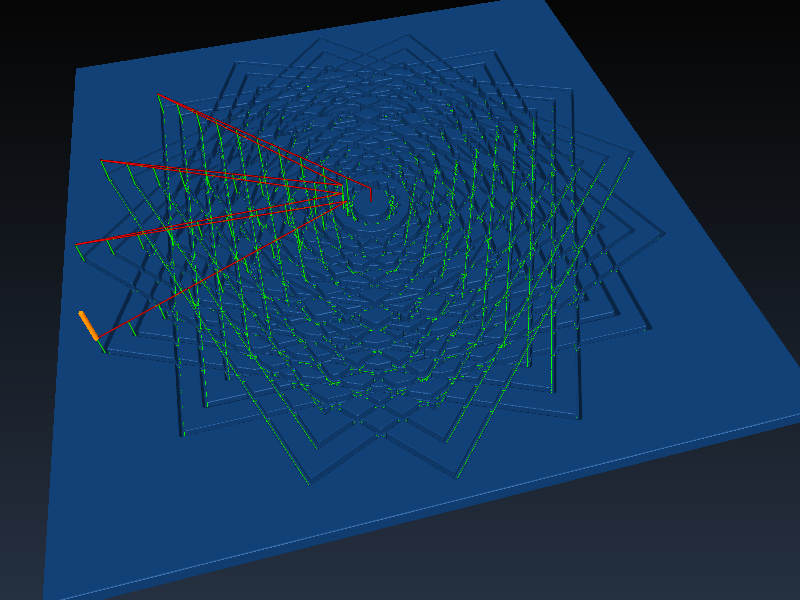

TPLang or Tool Path Language is a programming language for creating machine tool paths for CNCs. It is based on JavaScript and is a powerful replacement for the venerable but horribly outdated G-code language. However, TPLang can output G-code so it remains compatible with existing machine control software like LinuxCNC
TPLang is part of the OpenSCAM project and can be used in conjunction with the OpenSCAM CNC simulator.
TPLang is part of the OpenSCAM project. See openscam.org for information on downloading and installing the software.
This section aims to give you a quick and dirty introduction to TPL and some of it's features via a few simple examples.
TPL code is JavaScript with a library of built-in functions which allow you to generate tool paths. It looks like this:
The OpenSCAM simulator shows the result:
The previous example initializes the machine then cuts a square. Note, you must always set the feed rate to something other than zero before making a cut. It's also a good idea to select a tool and set the spindle speed. Also note thate, TPL uses metric units by default but you can switch to imperial units by calling units(IMPERIAL).
Note, the bracket notation {} used above lets you specify specific arguments and leave others to their default values. The following function calls are all equivalent:
The code in the square example may be more readable than typical GCode but TPL's real power comes from its ability to use more advanced language constructs such as functions. The above square example could be wrapped in a function like this:
Note the square() function uses icut() the incremental version of cut().
Given the square() function you can now cut repeated squares like this:
Here is the result of running the squares function as in the for loop above.
To continue the example a bit further and show more of the power of TPL we can repeat and rotate the squares to create an interesting pattern using the following program:
The simulator shows the final result:
After downloading and installing the latest OpenSCAM you can write a TPLang program, or try out one of the examples. TPLang programs usually have the file extension .tpl. You can execute a TPLang program like this:
This will print the resulting G-code to the screen. You can also save the output to a file like this:
You can then view the results in the OpenSCAM simulator like this:
You will also probably have to configure a tool table and define the workpeice (the material being cut) in order to get a correct simulation. See openscam.org for more information on using the simulator.
The TPLang Application Programming Interface allows you to duplicate any G-code program easily in a much more readable way but you also have the full power of the JavaScript language at your finger tips so much more is possible. In fact you don't even need CAM software you can model the shapes you want to cut directly in TPLang.
Issue a linear motion at the rapid feed rate from the current position to the new position defined by the provided axes arguments.
The same as rapid() but incremental defaults to true.
The same as rapid() except moves are at the current feed rate set by a call to feed().
The same as cut() but incremental defaults to true.
Make a linear move in the direction indicated until the probe state changes to the target state. If toward is true the probe motion will stop on contact. Otherwise it will stop on loss of contact.
probe() will return the coordinates of the position at the time the probe changed state. If the programmed point was reached before the state changed then the programmed point will be returend instead.
It is an error if:
- The current point is the same as the programed point.
- The current feed rate is zero.
- The probe is already in the target state.
seconds indicate the time in seconds that all axes will remain unmoving. Fractions of a second may be used.
rate indicates the units per minute in the XYZ cartesian system of all subsequent non-rapid moves until the feed rate is changed.
mode may be one of the following:
- FEED_UNITS_PER_MIN - The feed rate is in units per minute. The unit may be inches, millimeters or degrees depending on the current unit of length and which axes are moving.
- FEED_INVERSE_TIME - Indicates that moves should be completed in one divided by rate minutes. For example, if rate is 2.0, moves should be completed in half a minute.
- FEED_UNITS_PER_REV - Means that the controlled point should move a certain number of units per revolution.
If no arguments are given, returns the current feed rate and mode.
rate indicates the revolutions per minute of the spindle.
If rate is positive the spindle will turn in the clockwise direction. If negative in the counterclockwise direction.
A rate of zero turns the spindle off.
If surface is specified it selects a constant surface speed of surface feet per minute if IMPERIAL units are selected or meters per minute if METRIC units are selected. If max is also specified it indicates the maximum spindle RPM.
If no arguments are given, returns the current spindle speed, surface speed and maximum RPM.
Make tool number the current tool.
If no arguments are given the current tool number is returned.
type may be either METRIC which selects millimeters as the unit of measure or IMPERIAL which selects inches.
If no arguments are given the current type is returned.
Pause the program until the user resumes. If optional is true then only pause if the stop switch is activated.
JavaScript has built in math functions and constants which are members of the built-in Math object. The Math object is defined in the EMCAScript specification, section 15.8 or in a perhaps more readable format at W3 Schools, Math object reference.
Convert all arguments to strings and print them to the output stream.
Note that print() writes to the same output stream as the gcode functions so if you don't want to interfere with the gcode output you should wrap text in parentheses '()' so that it is treated as a gcode comment.
See openscam.org.
See openscam.org.